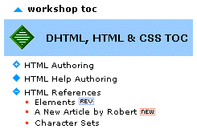
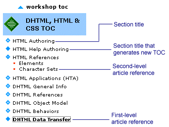
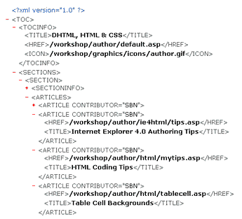
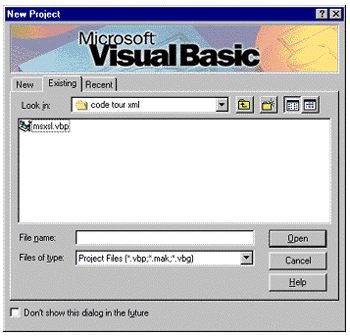
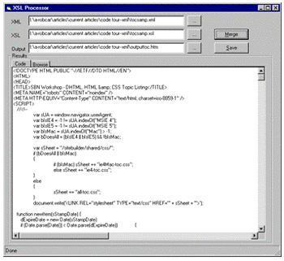
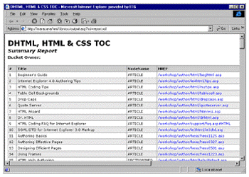

|
| ||
|
| ||
Robert Carter
Matt Oshry
Microsoft Corporation
December 2, 1998
 Download the sample files and source code (zipped, 14K)
Download the sample files and source code (zipped, 14K)
Download the sample Visual Basic 6.0 project (zipped, 4K)
The following article was originally published in Site Builder Network Magazine.
Continuing with our navel-gazing series on how we deliver the Site Builder Network site every day, we're happy to report we've started using XML. And we're not doing it just because we can, but because many of the touted benefits of XML are real, and have helped us solve the vexing problem of keeping table-of-contents files (TOCs) current and correct.
This article will:
The Microsoft Internet Client SDK team must be ready to prop hundreds of files when new versions of Internet Explorer launch. For the most recent, Internet Explorer 5 Beta, there was an extra challenge: The InetSDK team was converting all its pages to ASP from HTML. Thus, every single InetSDK file had to incorporate all the ASP code we use on the Site Builder Network, and get renamed with the extension .ASP. Maintaining two completely different sets of TOCs, one for the HTML version and one for the ASP, would have been a headache. Using XML, the team needed only one version of each TOC.
Those of you who used to hang around the site formerly known as the Site Builder Network (now the MSDN Online Web Workshop) for a while have encountered articles touting the greatness of XML (or, more accurately, its promise of greatness). We're willing to bet that this is the cusp of the XML era. With Internet Explorer 5, which includes the latest version of Microsoft's XML parser, we the Web Workshop can start adding some fun and useful features to help you navigate our site. Our TOC solution is one example.
XML is particularly appropriate because each TOC has the same code basis. All that varies is the data: the names of the articles and sections, the HREFs they point to, and any of a limited set of graphic or code features they require.
A special XML tag handles version control, as shown in the XML code snippet below.
<ARTICLE CONTRIBUTOR="InetSDK">
<VERSION VID="IE5B1">
<HREF>/workshop/reference/article1.asp</HREF>
<TITLE>Character Sets</TITLE>
</VERSION>
<VERSION VID="IE5Beta">
<HREF>/workshop/author/reference2.asp</HREF>
<TITLE>Character Sets</TITLE>
</VERSION>
</ARTICLE>
We use the VERSION element to help us set which entry gets displayed; in this case, the version refers to which release of Internet Explorer 5 we want to reference. So when the Developer Preview (the first beta version) was the most recent release available, the <HREF> tag of the HTML TOC pointed to the HTM version of "charsets". When the official Beta became available, the XSL processor used the <HREF> for the ASP version. How we do that is discussed below in Formatting with templates and loops.
Something else requires maintenance as well: code. There were fifteen major areas of the former Site Builder Network Workshop (which were preserved, albeit with a different look, in the MSDN Online Web Workshop, each with its own TOC. (Figure 1 shows a screenshot of the main Web Workshop areas; others are accessed from within the top-level sections below; if you don't remember what the old site looked like, or want a sample that mimics the look of the site formerly known as the Site Builder Network, we've got a download for you )
Figure 1. Major content areas of the former Site Builder Network Workshop
Before we converted to XML, to change the formatting or layout of our TOCs we had to update each file individually. While global search-and-replace helped, we would usually end up tweaking individual files to make sure they conformed to the latest design.
With our new system, we need only update and test the XSL stylesheet. With that one file ready to roll, we run all the XML versions of the TOCs through it in a batch process to generate the HTML output.
If we want to create another major area for the Web Workshop (such as the definitive collection of Robert Carter articles), all we need create now is the XML version of the TOC, run it through the XSL stylesheet, and voilá.
Because all the possible permutations of a TOC display are represented in the XML grammar and the XSL stylesheet transformer, we can easily turn display features on and off by including specific tags. For example, you may have noticed that when new articles are added to the Web Workshop (or existing articles are updated), a little graphic appears next to the entry in the TOC. Previously, to achieve that effect we had to cut and paste the appropriate code snippet into the TOC file. With XML, we simply add a tag indicating whether the article is new (<POSTED>) or revised (<UPDATED>) and specify within the tags on what date the change occurred. Thus, the code below:
<ARTICLES>
<ARTICLE CONTRIBUTOR="InetSDK">
<HREF>/workshop/author/html/reference/elements.asp</HREF>
<TITLE>Elements</TITLE>
<UPDATED>Nov 16, 1998</UPDATED>
</ARTICLE>
<ARTICLE CONTRIBUTOR="InetSDK">
<HREF>/workshop/author/html/reference/elements.htm</HREF>
<TITLE>A New Article by Robert</TITLE>
<POSTED>Nov 16, 1998</POSTED>
</ARTICLE>
</ARTICLES>
generates a TOC output shown in Figure 2.

Figure 2. Adding graphics through tag specification
Note that the editor does not have to remember to remove the tag later, either. Using script, we test the date within the tags to make sure it passes a "date test". If more than seven days have expired, the graphic no longer appears (for more information, the date function is outlined in the file tocsamp.xsl, one of the sample files you can download (zipped, 14K).
One of the benefits of XML is the ability to separate data from its formatting on the page. What that means in practice is that you can create HTML-like tags that have more meaning to authors (and, if they have an XML parser, users) and that tie directly to the information you're going to post.
<LI><A>HTML Authoring</A>
<UL>
<LI><A href="../../workshop/article1.asp">beginner's Guide</A>
<LI><A href="../../workshop/article2.asp">ie 4.0 Authoring Tips</A>
Compare the above HTML with the same snippet from the XML files our editors produce:
<SECTION>
<SECTIONINFO>
<TITLE>HTML Authoring</TITLE>
</SECTIONINFO>
<ARTICLES>
<ARTICLE CONTRIBUTOR="SBN">
<HREF>/workshop/author/html/beghtml.asp</HREF>
<TITLE>Beginner's Guide</TITLE>
</ARTICLE>
</ARTICLES>
</SECTION>
The XML version seems a lot more intuitive to us (if it doesn't to you, you may need to take more breaks from coding). Before XML, our editors had to step into the HTML and edit it directly, keeping in mind the coding conventions for different elements and situations, which were more complex than you might at first think. For example, look at the following graphic:

Figure 3. Section of DHTML, HTML, & CSS content area TOC frame
There are four different types of TOC elements represented in Figure 3: section titles, first-level article references, second-level article references, and new-TOC references. The code for each element is unique and (Robert would argue) non-intuitive. (For a full description of the elements and their function, we recommend A Tour of the Code -- NavFrame: Selective Frame Activation.)
With XML, the unique tags we create free our editors from having to remember the coding requirements for each element. For example, to indicate that a TOC entry should generate a new TOC (as is the case with "HTML Help Authoring"), we simply add an attribute statement to the <SECTIONINFO> tag:
<SECTIONINFO NEWTOC="true">
Now that you have some insight into the benefits XML provides, we can get into the particulars of our XML TOC implementation. In brief, we take two files, an XSL style sheet and an XML data file, run them through the XML parser and XSL processor of Internet Explorer 5, generate an HTML version of the file, and post it to the site. To be precise, the XSL processor outputs XML; we've just intentionally structured the XML output to adhere to HTML.
It was a three-phase process. Phase 1 involved setting up our XML tagging schema, Phase 2 was developing an XSL stylesheet that processed our XML schema and outputted the HTML that displays the TOC, and Phase 3 was automating the process of generating the HTML files.
To truly automate the HTM file generation, we had to identify and categorize all the "canned" data and all the variable data. The variable data was then categorized and compiled in an XML grammar. Review the "XML Clarifies Tagging" section above to get an idea of where we ended up; the table below gives all the tags and attributes (and their parentage) for our XML TOCs. Note that anything that appears in every TOC page, such as headers and footers, didn't have to be in the schema. As long as it didn't change, the information could be included "as is" in the XSL file (and thus output directly to the HTML file).
| Tag | Parent | Description |
|---|---|---|
| TOC | n/a | The outermost containing tag |
| TOCINFO | TOC | contains data describing the TOC within TITLE, HREF, and ICON tags |
| SECTIONS | TOC | contains a collection of top-level headings |
| SECTION | SECTIONS | defines a top-level heading which may contain a collection of articles or may simply define a link to a specific topic or TOC |
| SECTIONINFO | SECTION | contains data describing the SECTION including a TITLE and an optional HREF. Currently, a SECTION should contain either a SECTIONINFO with an HREF or a collection of ARTICLES but not both. |
| ARTICLES | SECTION | contains a collection of ARTICLE tags |
| ARTICLE | ARTICLES | defines links to actual content via TITLE and HREF children |
| VERSION | ARTICLE | indicates that multiple versions of an ARTICLE exist. Most useful when a contributing group wishes to publish multiple versions of its content to different audiences (e.g. internal v. external) |
| TITLE | SECTIONINFO|ARTICLE| VERSION | caption of a section or article |
| HREF | SECTIONINFO|ARTICLE| VERSION | specifies the location of an article or alternate TOC |
| LINKTYPE | SECTIONINFO|ARTICLE| VERSION | indicates whether a link takes the user away from the site (leave-sbn) or away from the Microsoft domain (leave-ms) |
| TARGET | SECTIONINFO|ARTICLE| VERSION | indicates the target frame for a hyperlink |
| POSTED | SECTIONINFO|ARTICLE| VERSION | contains the date the article or section was first published |
| UPDATED | SECTIONINFO|ARTICLE| VERSION | contains the date the article or section was last updated |
| Attribute | Tag | Description |
|---|---|---|
| VID | VERSION | uniquely identifies a milestone for use in building different TOCs from the same source. |
| CONTRIBUTOR | SECTION|ARTICLE | identifies the group that contributed the article or all the content within a section. |
| NEWTOC | SECTIONINFO | indicates that the heading will open a new TOC when clicked. |
Once we developed the grammar, we rewrote our existing TOCs in that context; every area of the Web Workshop now has a file in its default directory entitled toc.xml. Because our XML was well-formed (the ability of an XML parser to render an XML page), you could use Internet Explorer 5 to display the XML pages directly (here is a screenshot of what the XML TOC file for the DHTML, HTML & CSS area looks like without our XSL stylesheets applied).

Figure 4. Internet Explorer 5 default rendering of the Web Workshop XML file
Not bad for a default view. (Actually, it's the MIME viewer's default view, which is installed by Internet Explorer 5 and is unique to that version.) The red pluses and minuses are expandable/collapsible triggers, which will show or hide any child tags (no red mark means no children).
Note: To display the sample toc.xml file on your computer without our XSL formatting, eliminate this line from the code:
<?xml:stylesheet type="text/xsl" href="/workshop/templates/toc.xsl"?>
However, to get our XML files in our preferred Web Workshop format (see Figure 2 above), we had to do some fancy stepping with XSL, which we'll get to. But if you want to be sure your XML is well formed, test it using this default view. If your XML is not well formed, you'll get an error message and a line-number reference to the offending character(s).
Once we set up our XML grammar (and generated the XML files for each section from which we'll generate the HTML versions), we developed the XSL stylesheet that generates out HTML-compatible output.
When we apply our XML schema to a specific Web Workshop area, then run the resulting XML TOC through our XSL style sheet, the XSL processor built into Internet Explorer 5 establishes the relationships between all the elements in the file, which in turn gives the XSL stylesheet the ability to figure out which styles (or queries, functions, or manipulations) to apply to specific elements.
If you've correctly specified your grammar, you should be able to identify individual elements -- or groups of elements -- easily and without conflicts. The XSL processor encapsulates lots of rule arbitration, with the express purpose of specifying the appropriate relationships among every element in your tree. Whether you create a correct result tree hinges on strictly following the XML tagging convention. Every tag opened must have a corresponding closing tag, and no elements can span other elements (which means that if you open a second tag within another tag, you absolutely, positively must close the second tag before closing the first; otherwise, the hierarchy is indeterminate). You'll begin to see what we mean as we step through our XSL file.
We'll begin at the beginning of tocsamp.xsl. We start with an XML processing instruction, which identifies the version of XML to which this document conforms:
<?xml version="1.0"?>
Immediately after some comments we encounter our first XSL declarations. Note that we're using the xsl "namespace"; all our XSL declarations will begin <xsl:foo> and close </xsl:foo>. As a result, the XSL processor gets first dibs at anything within a declaration. If we have script blocks or other behaviors that we want, for instance, the browser to implement, we have to use other declarations that turn off the XSL processor for that block (or, more accurately, cause the XSL processor to pass it along unchanged).
<xsl:stylesheet xmlns:xsl="www.w3.org/TR/WD-xsl"> <xsl:template match="/">
The first declaration reveals that we're working with a stylesheet, which is a collection of templates that determine the treatment of elements in our result tree. The next line applies the stylesheet to the root node of our XML document.
After some introductions and general declarations, we begin citing standard HTML tags such as <HTML> and <HEAD>. With the <TITLE> tag, we encounter another XSL declaration:
<TITLE>SBN Workshop - <xsl:value-of select="TOC/TOCINFO/TITLE" /> Topic Listing</TITLE>
Remember that our XML file has the following structure:
<TOC>
<TOCINFO>
<TITLE>DHTML, HTML & CSS</TITLE>
<HREF>/workshop/author/default.asp</HREF>
<ICON>/workshop/graphics/icons/author.gif</ICON>
</TOCINFO>
.
.
.
</TOC>
The select attribute of the value-of element searches the XML tree until it finds a value in the <TITLE> node (which is itself in the <TOCINFO> node of the <TOC> node). If the "search" is successful, it returns the value of the element ("DHTML, HTML, & CSS") as a text string. Running the XML listing above through the XSL snippet we just cited will create the following HTML:
<TITLE>Web Workshop - DHTML, HTML, & CSS Topic Listing</TITLE>
If there is more than one element in the node, the call will return the value of the first element. If there isn't an element, the call will return an empty string. Note also that, because the value-of element is "empty" (it has no children elements), you can embed the required closing tag within the calling tag.
The next section of our code wanders into a big block of script, which raises its own issues. It is useful to remember that there are two types of script possible in XSL: "helper" script that the XSL processor uses to do its work, and "output" script that gets passed through unprocessed to the outputted HTML. The script we're dealing with now in tocsamp.xsl is the latter. To deal with our output script, we wrap all of it in two different containers. First, we use xsl:comment to insert comment tags into our HTML file (so our output script doesn't confuse browsers that don't support script). Second, we use the CDATA node type element to ensure all the characters within the node are processed without needing to "escape", rather than as references or XSL elements. Thus, the code below (which we made up for the sake of illustration)
<SCRIPT LANGUAGE="JScript">
//<xsl:comment><![CDATA[
x = 0;
if (x < 1 && x > -1)
{
window.alert("Hello, world");
}
//]]></xsl:comment>
</SCRIPT>
becomes
<SCRIPT LANGUAGE="JScript">
//<!--
x = 0;
if (x < 1 && x > -1)
{
window.alert("Hello, world");
}
//--!>
</SCRIPT>
in the outputted HTML document. Note that you don't have to use CDATA to preserve your script; but if you don't, be sure your follow-on script doesn't contain any characters that would trigger the XSL processor (such as "<", "&", and so on). We strongly recommend using CDATA, though.
Another really useful aspect of XSL is its ability to control the formatting of elements that occur more than once in a file. Using the select statement we described above, we can also use programmatic constructs such as loops to cycle through the elements contained in a node in an XML tree and apply consistent formatting. That's what we do within the <SECTION> and <ARTICLES> nodes. The loop construct is the <xsl:for-each> element. Combined with the select attribute, we can identify all the elements within specific nodes and format accordingly. The code below demonstrates the loop for the <SECTIONINFO> node, which contains the names of different sections within a TOC.
<xsl:for-each select="TOC/SECTIONS/SECTION"> <xsl:apply-templates select="SECTIONINFO" /> </xsl:for-each>
Formatting for specific elements within a node is accomplished by combining the <xsl:apply-templates> element with the select statement. Elsewhere in the XSL stylesheet should be the <SECTIONINFO> template. And, lo, here it is:
<xsl:template match="SECTIONINFO">
<LI CLASS="clsShowHide">
<A href="javascript:noop()" CLASS="clsTOCHeading">
<xsl:value-of select="TITLE"/></A>
<xsl:apply-templates select="UPDATED" />
<xsl:apply-templates select="POSTED" />
</LI>
</xsl:template>
Note that you can nest references to other templates within templates, as indicated by the references to the <UPDATED> and <POSTED> template calls.
Some of the other template formats get more involved, such as the template for formatting articles in the TOC:
<xsl:template match="ARTICLES">
<UL CLASS="clsItemsHide">
<xsl:for-each select
=".//*[(nodeName()='ARTICLE' $and$ HREF)
$or$
(nodeName()='VERSION' $and$ @VID='IE5B2')]">
<LI><A CLASS="clsTOCItem">
<xsl:choose>
<xsl:when test="*[TARGET]">
<xsl:attribute name="TARGET">
<xsl:value-of select="TARGET" />
</xsl:attribute>
</xsl:when>
<xsl:when test="*[LINKTYPE]">
<xsl:attribute name="TARGET">_top</xsl:attribute>
</xsl:when>
</xsl:choose>
<xsl:if match="*[ABSTRACT]">
<xsl:attribute name="TITLE">
<xsl:value-of select="ABSTRACT" /></xsl:attribute>
</xsl:if>
<xsl:attribute name="HREF">
<xsl:value-of select="HREF"../../></xsl:attribute>
<xsl:value-of select="TITLE"../../></A>
<xsl:apply-templates select="LINKTYPE" />
<xsl:apply-templates select="UPDATED" />
<xsl:apply-templates select="POSTED" />
</LI>
</xsl:for-each> <!-- ARTICLE | ARTICLES/VERSION -->
</UL>
</xsl:template>
We'll start with one of the more intuitive code snippets in the articles template.
<xsl:template match="ARTICLES"> <UL CLASS="clsItemsHide"> <xsl:for-each select =".//*[(nodeName()='ARTICLE' $and$ HREF) $or$ (nodeName()='VERSION' $and$ @VID='IE5B2')]">
We initiated a loop again, but this time the select attribute goes a little nuts. The .//* block is a set of special XSL operators and characters. The "." indicates the current context in the hierarchy, the "../..//" is a recursive descent operator, and the "*" is our good, old wildcard operator. In short, those three operators in succession say that, starting from where we are now, go and gather all the elements of all the child nodes.
The block of code within the "[]" brackets narrows the search to either <ARTICLE> elements that contain an <HREF> or <VERSION> elements that contain a VID attribute of "IE5B2". Note that we can use Boolean comparison operators within XSL. The snippet below shows how the different locations in the result tree in which the <HREF> node can reside, necessitating searches of successive child nodes.
<ARTICLE CONTRIBUTOR="InetSDK">
<VERSION VID="IE5B2">
<HREF>/workshop/author/hta/overview/htaoverview.asp</HREF>
<TITLE>Overview</TITLE>
</VERSION>
</ARTICLE>
<ARTICLE CONTRIBUTOR="SBN">
<HREF>/workshop/author/html/beghtml.asp</HREF>
<TITLE>Beginner's Guide</TITLE>
</ARTICLE>
Also note that this statement demonstrates our versioning control. Whatever articles meet our filtering criteria make the final cut to the HTML TOC file. If we wanted to include additional versions of articles, we could simply attach another "@VID=" condition.
Once we isolate all the articles that meet our filtering criteria, we proceed to format them according to the additional elements in the XML file. All articles that get published will get wrapped in an anchor tag (remember that we're dealing with TOC article entries, and if people click on an article entry we want to transport them directly to that article).
The rest of the template focuses on what additional elements or attributes are inserted into the anchor tag. Our first block of code uses the <xsl:choose> element, which is analogous to the CASE programming method. In short, as soon as a condition in the section is met, do what that block says and exit. In our example, we first test for a <TARGET> node; if there is one, insert TARGET= and the string in the <TARGET> node. If there's not a <TARGET> node but there is a <LINKTYPE> node, insert "TARGET=_top" into the <A> block. And so on.
Rather than bore you to tears with an exhaustive description of every XSL feature we've implemented, we'll stop and let you poke around for yourself. All the tools are available on the MSDN Online Web Workshop. You can follow the links we've provided above, or go on your own fact-finding mission in the XML area MSDN Online. (Hint: Almost all of the stuff we've talked about is found in the XSL Reference in the section "XML Support in IE5 Beta").
Matt took a little time to bundle up a Microsoft Visual Basic project for you to use (zipped, 4K). As we mentioned in the beginning, all your site's visitors don't have to have Internet Explorer 5 for you to have fun with XML and XSL (although you can really go wild for those that do). You can use XML on the production side of your operation, and reap the benefits we describe earlier (your production staff needs to run Internet Explorer 5, though).
To begin, launch Visual Basic 6.0. When prompted with the New Project dialog box, select the Existing tab and navigate to the folder where you unzipped the sample project download: the msxsl.vbp file should appear, as shown below:

Figure 5. Opening the Code Tour sample project in Visual Basic 6.0
After you have highlighted msxsl.vbp and selected Open, the Visual Basic project should open. Select Start from the Run menu (or simply press F5), and an XSL Processor module will activate. You then simply point the module at the XML and XSL files you want to process, and give a name to the HTML output file. Click on Merge, and the code for the new HTML file will appear in the large text box underneath, as shown in Figure 5.

Figure 6. Visual Basic XSL Processor module and sample output
If you like what you see (you can view the code output by selecting the Browse tab), make sure to select Save to store the code in the indicated file.
Experiment with your own XML grammars and XSL transformations. The module, while pretty straightforward, makes for a useful little workshop on its own.
While it may seem we've been talking about it for a while, the age of XML --and its partners XSL and XQL -- is really just beginning. The Site Builder Network is in the midst of a wholesale adoption of XML to streamline the editorial and code-updating processes, ease our maintenance overhead, and, when a larger audience of Internet Explorer 5 users gets established, add new navigation features to our site. What's more, from the TOC data schema embedded in our XML files, we can create all kinds of internal views of what files are where (hopefully, this will not be used to show just how few articles Robert's been writing of late). In fact, George Young surfaced from his development work long enough to generate just such a custom XML report:

Figure 7. Example of custom report generation from XML file
This report is generated from the same XML file from which the TOC is generated. The XML is transformed by a different XSL stylesheet to output the report, which displays every link in the TOC, along with its HREF, author, editor, post date, and other tracking data stored in the XML file (but not rendered in the TOC). Same source data, totally different output. Cool, no?
As more and more sites start publishing their XML data, the benefits of XML and XSL will extend to those who, dissatisfied with the way in which a site displays data, will want to develop their own views.
What's more, as with server-side script, the capabilities of the requesting browser can be taken into account when sending down data. If an XML-savvy browser such as Internet Explorer 5 is making the request, you can send down files that allow the client to re-configure and manipulate the data without additional trips to the server (a good example of this is provided in the XML Auction Demo).
Finally, we should acknowledge that, yes, the XML and XSL implementations in the Internet Explorer 5 Beta are just that, betas, and thus some features and functions might change before the final release.
Robert Carter is a Microsoft Site Builder Network technical writer. Matt Oshry is a programmer writer on the Microsoft Internet Client SDK team.
Did you find this material useful? Gripes? Compliments? Suggestions for other articles? Write us!
© 1999 Microsoft Corporation. All rights reserved. Terms of use.